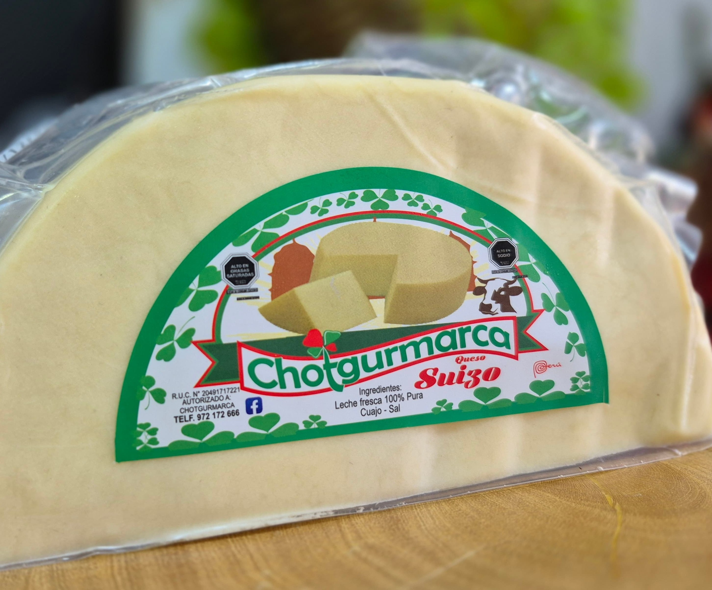
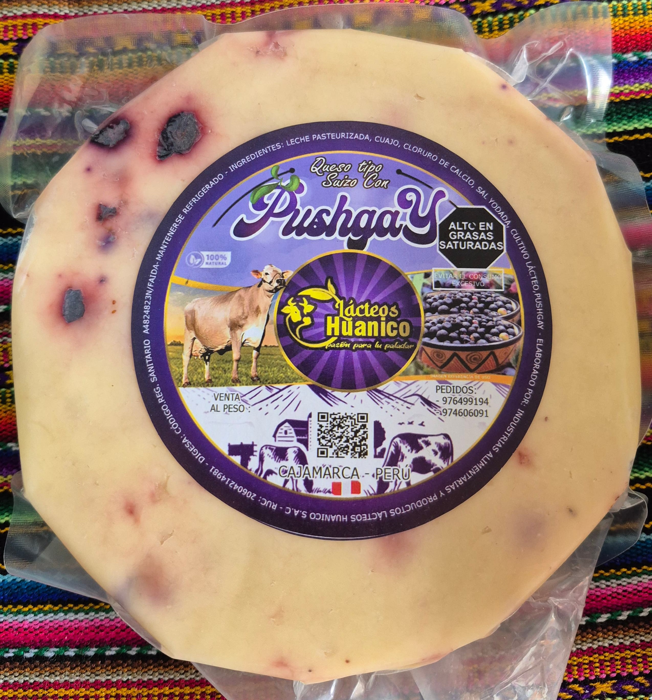
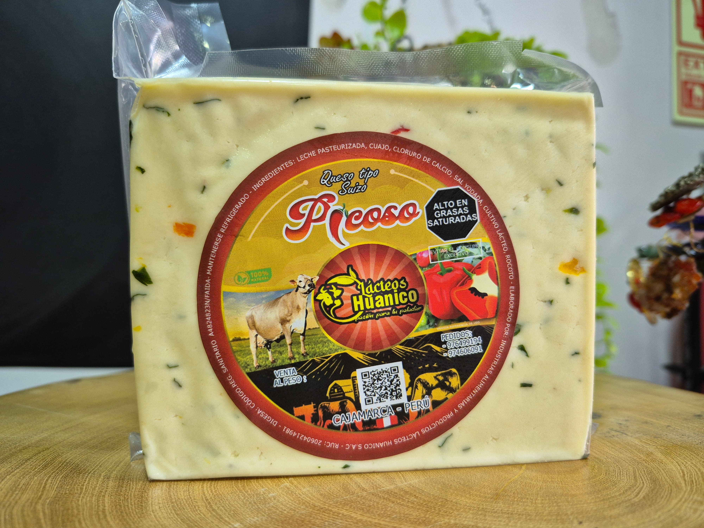

QUESO TIPO SUIZO (Cajamarca)

Queso tipo suizo
Chicloso y suave: excelente para pan, sánguches, derretidos y tablas de quesos.
S/40.00 x kilo

Queso Tipo suizo con pushgay (Lácteos Huanico, Cajamarca)
Cremoso y con carácter: ideal para pan, piqueos y tablas.
S/40.00 x kilo

Queso Tipo suizo con pecana (Lácteos Huanico, Cajamarca)
Toque tostado y elegante: perfecto para tablas, bocaditos y panes.
S/40.00 x kilo

Queso Tipo suizo Picozo (Lácteos Huanico, Cajamarca)
Picantito y sabroso: ideal para sánguches, piqueos y derretidos.
S/40.00 x kilo